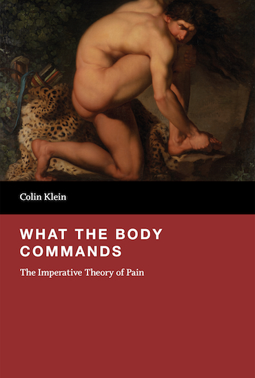
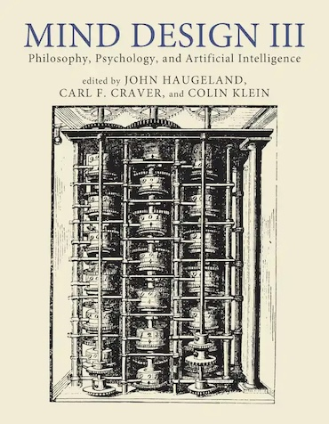
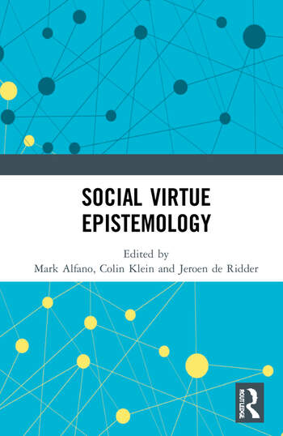

Colin Klein
I am a Professor in the School of
Philosophy at the Australian National University, and the director of the ANU Centre for
Consciousness.
I am also a lead CI in the
Digital Trust Research Group,
a member of the ANU
Centre for Philosophy of the Sciences, and a section editor for the The Open Encyclopedia of Cognitive Science.
Before ANU, I taught at Macquarie
University, and before that I spent a year as a visiting
research fellow at the ANU. My first job was at the University of Illinois
at Chicago. I did my undergraduate degree at Franklin and Marshall College
and my PhD at Princeton
University. For moderately up-to-date information on my
work and current projects, please scroll down or else click on one of the topics below.
Upcoming events
- I'll be speaking on diffusion models (joint work with Osman Attah ) at University of Illinois at Chicago (5 Sep) and Stanford University (17th Sep)
- I'm organising a Centre for Consciousness workshop "New Directions in Philosophy of Suffering" on Friday, 6 Nov. For more information, check out the flyer
- I'm swapping to github from S3, and this is here to make sure it works
Active Work
New and Forthcoming
- "Represented structure versus representational structure: A challenge for interpreting LLMs" (2026) Philosophy and the Mind Sciences Print Version
- "Identifying Indicators of Consciousness in AI Systems" Patrick Butlin et. al. (2025) Trends in Cognitive Sciences . Published version
- "Pain Asymbolia Is Probably Still Pain" Alexandre Duval and Colin Klein. (2026) Philosophy of Science . Preprint version
- "Computational Individuation: Isomorphism, not Indeterminacy" (2026) Analysis | Final draft | Published Version
In Progress
(Feedback welcome, but please do not quote or cite without permission.)- "The Krohn-Rhodes theorem for the mathematically innocent philosopher" - email for draft
- ngramminator: A tool for cross-text comparison, focusing on classical Chinese. - email if you want to give it a try!
- "What do language models model? Transformers, automata, and the format of thought" This is now up on arXiv . This draft is probably turning into multiple different papers (one of which is above as "Represented structure..."), but feedback still very welcome.
- "Exploring major transitions in the evolution of biological cognition with artificial neural networks" Voudouris, K., Barron, A.B., Klein, C., Halina, M., and Patel, M. Now on arXiv . Needs further development, but interesting preliminary result.
- "Studying the Whole of Consciousness" (with Andrew Barron) Popular essay, shortlisted for the 2025 Berggruen Prize Essay Competition. Who knows where it will end up! Final Version here
Books
|
 |
 |
 |
Philosophy of Cognitive Neuroscience
Theory
- “Comparing cognition across major transitions using the hierarchy of formal automata” (2024) Colin Klein and Andrew Barron. WIREs Cognitive Science e1680 Online Version
- “Cognitive Ontology” (2024) The Open Encyclopedia of Cognitive Science Online Version
- "Transitions in Cognitive Evolution" (2023) Andrew B Barron, Marta Halina, and Colin Klein. Proceedings of the Royal Society B 290. Published Version
- "Explaining Neural Transitions through Resource Constraints" (2022) Philosophy of Science 89(5): 1196 - 1202 Published Version | Final Draft
- "What is the job of the job description challenge? A case study from body representation" Colin Klein and Peter Clutton. (2021) in Neural Mechanisms: New Challenges in Philosophy of Neuroscience ed Fabrizio Calzavarini & Marco Viola. Dordrecht: Springer. pp 449–465. Published version
- "Do we represent peripersonal space?"(2021) in The World at our Fingertips: A Multi- disciplinary Exploration of Peripersonal Space ed F. de Vignemont, H.Y. Wong, A. Serino, and A. Farné. Oxford: Oxford University Press. Final Draft
- "A Humean challenge to predictive coding" (2020) in The Philosophy and Science of Predictive Processing ed Dina Mendonca, Manuel Curado, and Steven Gouveia. Bloomsbury Press. Final Draft
- "Mechanisms, resources, and background conditions" (2018) Biology and Philosophy 33:36 Published Version | Final draft
- What do Predictive Coders Want?" (2018) Synthese 95(6): 2451-2557. Final Draft | Published Version
- Peter Clutton, Stephen Gadsby & Colin Klein "Taxonomising delusions: content or aetiology?" (2017) Cognitive Neuropsychiatry 22(6): 508-527. Published paper | Archive Link
- Esther Klein and Colin Klein "Did the Chinese have a change of heart?" (2012) Cognitive Science 36(2): 179-82. Published Version
- "Kicking the Kohler Habit," Philosophical Psychology (2007) Vol. 20, No. 5, pp. 609-619. Penultimate Draft
- Anthony Chemero, Colin Klein, and Will Cordeiro. "Events as Changes in the Layout of Affordances." (2003) Ecological Psychology. 15(1), 19-28. Published Version
Neuroimaging-specific
- "Decoding the Brain: Neural Representation and the Limits of Multivariate Pattern Analysis in Cognitive Neuroscience." (with J. Brendan Ritchie and David M. Kaplan) BJPS (2019) Vol. 20, No. 2, pp. 581-607.
- "Interpreting the dimensions of neural feature representations revealed by dimensionality reduction'' Erin Goddard, Colin Klein, Samuel G Solomon, Hinze Hogendoorn, and Thomas A Carlson. (2018) Thomas A Carlson, Erin Goddard, David M Kaplan, Colin Klein, J. Brendan Ritchie. Neuroimage 180(A): 88–100 Published paper
- "Ghosts in machine learning for cognitive neuroscience: Moving from data to theory" Thomas Carlson, Erin Goddard, David M. Kaplan, Colin Klein, Brendan Ritchie. (2018) Thomas A Carlson, Erin Goddard, David M Kaplan, Colin Klein, J. Brendan Ritchie. Neuroimage 180(A): 88–100 Published Paper
- "Brain Regions as Difference-Makers" (2017) Philosophical Psychology 30(1-2): 1-20. Published Paper | Final Draft
- "What is a cognitive ontology, anyway?" (2017) Annelli Janssen, Colin Klein, and Marc Slors. Philosophical Explorations 20:2 (123-128) Archive version
- "The Brain at Rest: What it's Doing and Why That Matters" Philosophy of Science (2014) 81(5): 974-985 Published Paper | Final Draft
- "Cognitive Ontology and Region- versus Network-oriented Analyses" Philosophy of Science (2012) 79(5): 952-960. Final Draft
- "The Dual Track theory of Moral Decision-Making: A Critique of the Neuroimaging Evidence" Neuroethics (2011) Vol. 4, pp 143-162. Published Version | Final Draft
- “Philosophical Issues in Neuroimaging” (2010) Philosophy Compass 5(2), pp. 186-198. Published Version
- "Images are not the Evidence of Neuroimaging" British Journal for the Philosophy of Science (2010) Vol. 61, pp. 265-278. Published Version | Penultimate Draft
- Chris Mole and Colin Klein "Confirmation, Refutation and The Evidence of fMRI" In Foundational Issues in Human Brain Mapping (2010), pp99-112. MIT press
Pain Perception
- "Transduction, calibration, and the penetrability of pain" (2024) Ergo 10: 50. Published Version
- “Is Pain Asymbolia a Deficit or a Syndrome? Historical Reflections on an Ongoing Debate.” (2023) Colin Klein and Alexandre Duval. Belgrade Philosophical Annual (special issue in honor of Nikola Grahek) 36/02 p41-57. Published Version
- Michelle Liu and Colin Klein "Pain and Spatial Inclusion: Evidence from Mandarin" Analysis (2020). 80(2): 262–272 Final Draft | Published Version
- "Imperativism and Pain Intensity" (2019) (with Manolo Martínez) in The Philosophy of Pain: Unpleasantness, Emotion, and Deviance. ed. David Bain, Michael Brady, and Jennifer Corns, Routledge Final Draft
- "Pain, Care, and The Body: A Response to de Vignemont" (2017) Australasian Journal of Philosophy 95(3):588-593 Older Draft | Published Paper
- "Pain signals are predominantly imperative" (2016) (with Manolo Martínez) Biology and Philosophy 31:283–298.Published Version| Final Draft
- What Pain Asymbolia Really Shows" Mind (2015) Published Paper | Final Draft
- "The Penumbral Theory of Masochistic Pleasure" The Review of Philosophy and Psychology (2014) 5(1): 41-55 Published Paper | Final Draft
- "Imperatives, Phantom Pains, and Hallucination by Presupposition" Philosophical Psychology (2012) 25(6): 917-928. Published Paper | Final Draft
- "Response to Tumulty on Pain and Imperatives" (2010) The Journal of Philosophy Vol. CVII, No. 10, pp 554-557. Final Draft
- "An Imperative Theory of Pain," The Journal of Philosophy (2007) Vol. CIV, No. 10, pp 517-532. Penultimate Draft
Consciousness
The Evolution of Consciousness
- "Phenomenal interface theory: a model for basal consciousness" (with Andrew Barron) 2025 Philosophical Transactions of the Royal Society B. Published Version
- "Evolutionary Transition Markers and the Origins of Consciousness” (2022) Marta Halina, David Harrison, and Colin Klein. Journal of Consciousness Studies 29(3-4): 62-77. Published Version
- Andrew Barron and Colin Klein. "What insects can tell us about the origins of consciousness" (2016) Proceedings of the National Academy of Sciences 113(18): 4900–4908. Personal Version | Online Version
- Colin Klein and Andrew Barron "Reply to Adamo, Key et al., and Schilling and Cruse: Crawling around the hard problem of consciousness" (2016) Online Version
- Klein, Colin and Barron, Andrew B. (2016) "Insects have the capacity for subjective experience." Animal Sentience 2016.100 Published Paper | Replies to commentary
AI and consciousness
- "Consciousness in Artificial Intelligence: Insights from the Science of Consciousness" (2023) Butlin, Long, et al. arXiv whitepaper
The Hard Problem
- “Explanation in the Science of Consciousness: From the Neural Correlates of Consciousness (NCCs) to the Difference Makers of Consciousness (DMCs)” (2020) Colin Klein, Jakob Hohwy, and Tim Bayne. Philosophy and the Mind Sciences 1(II), 4. Published Version
- Colin Klein and Andrew Barron "First-person interventions and the meta-problem of consciousness" (2020) Journal of Consciousness Studies 27:5-6 82-90. Final Draft | Published Version
- Colin Klein and Andrew Barron "How Experimental Neuroscientists Can Fix the Hard Problem of Consciousness" (2020) Colin Klein and Andrew Barron Neuroscience of Consciousness 6(1): niaa009 Final Draft
Human Consciousness
- "Consciousness, Intention, and Command Following in the Vegetative State" (2017) The British Journal for the Philosophy of Science 68(1): 27-54 Final Draft | Online Version
- “Variability, convergence and dimensions of consciousness” (2015) Colin Klein and Jakob Hohwy. In Behavioral Methods In Consciousness ed. Morten Overgaard, Oxford: Oxford University Press: 249–264. OUP Book Page
Computation, Reduction, and Realization
Computation
- “Exploratory analysis and the expected value of experimentation” (2024) Philosophy of Science 91(5): 1109-1117 Published Version
- "Computing in the Nick of Time" (2022) J Brendan Ritchie and Colin Klein. Ratio Published Version
- "Polychrony and the process view of computation" (2020) Philosophy of Science 87(5): 1140–1149. Published version
- Computation, consciousness, and 'Computation and consciousness'" (2019) In Routledge Handbook of the Computational Mind, ed. Mark Sprevak and Matteo Colombo, 297–309. Final Draft
- "Olympia and Other O-Machines" Philosophia (2015) 43(4): Final Draft | Published Version
- "Two Paradigms for Individuating Implementation" The Journal of Cognitive Science (2012) 13(2): 167-179. Final Draft
- "Dispositional Implementation Solves the Superfluous Structure Problem" Synthese (2008) Vol. 165, No. 2, pp. 141-153. Penultimate Draft | Published Version
Reduction and Realization
- "Psychological Explanation, Ontological Commitment, and the Semantic view of Theories " New Waves in Philosophy of Mind (2014) ed. Mark Sprevak and Jesper Kallestrup. New York, Palgrave Macmillan: 208-225. Publisher Website | Final Draft
- "Multiple Realizability and the Semantic View of Theories" Philosophical Studies. (2013) 163(3): 683-695. Published paper | Penultimate Draft
- "Reduction without Reductionism: A Defence of Nagel on Connectability" Philosophical Quarterly (2009) Vol. 59, No. 234, pp. 39-53. Published version
- "An Ideal Solution to Disputes about Multiply Realized Kinds," Philosophical Studies (2008) Vol. 140, No. 2, pp. 161-177. Penultimate Draft
Ethics
I am not really an ethicist, but I seem to have published some relevant stuff.- “Investigating gender and racial biases in DALL-E Mini Images” (2024) Marc Cheong, Ehsan Abedin, Marinus Ferreira, Ritsaart Willem Reimann, Shalom Chalson, Pamela Robinson, Joanne Byrne, Leah Ruppanner, Mark Alfano and Colin Klein ACM Journal on Responsible Computing 1(2)13: 1–20. Published version
- “Mapping Topics in 100,000 Real-life Moral Dilemmas” (2022) Tuan Dung Nguyen, Georgiana Lyall, Alasdair Tran, Minjeong Shin, Nicholas Carroll, Colin Klein, and Lexing Xie. F Proceedings of the International AAAI Conference on Web and Social Media (ICWSM 2022) 16(1), 699-710. Published Version
- "The Ethical Gravity Thesis: Marrian Levels and the Persistence of Bias in Automated Decision-making Systems" (2021) Atoosa Kasirzadeh & Colin Klein Proceedings of the 2021 AAAI/ACM Conference on AI, Ethics, and Society (AIES '21) Final draft
- Jessica Isserow and Colin Klein (2017) "Hypocrisy and Moral Authority" Journal of Ethics and Social Philosophy 12(2): 191-222. Published version
Software and Technical Reports
- wisdom-of-crowds: A Python package for social-epistemological network profiling. Paper forthcoming in Proceedings of the 13th Conference on Complex Networks Github repo
- "Automated clustering of COVID-19 anti-vaccine discourse on Twitter" Quintana et al. arXiv link
Occasional papers, preprints, etc
Not everything makes it to press. Here are a few things that are probably abandoned but seemed worth archiving for posterity- "Predictive Processing: Avoiding the elephant in the room" - Response to Sun and Firestone (2020). PsyArXiv link A rejected letter, where I'm working through some 1950s stuff about feedback in the context of predictive processing.
- "Confidence Intervals on Implicit Association Test Scores Are Really Rather Large" - an attempt to estimate 95% CIs on IAT scores. They are probably larger than you think. (if anyone has access to raw data, please get in touch!)PsyArXiv Link
- "What do language models model? Transformers, automata, and the format of thought" This is now up on arXiv . This is me working out what I think about transformers. It's slowly splitting into various pieces, but since many people read/saw this version of it, I'm preserving it for posterity. The main thing holding me up was really whether I could trust the bits about substring invariance. Well that and I went down a long (ongoing) rabbit hole about the Krohn-Rhodes theorem.
Public Engagement
- "Are animals and AI conscious? We’ve devised new theories for how to test this"
- “Why ChatGPT isn’t conscious – but future AI systems might be”
- "Don’t (just) blame echo chambers. Conspiracy theorists actively seek out their online communities"
- "The ‘painless woman’ helps us see how anxiety and fear fit in the big picture of pain" | (Translated to Indonesian)
- "Why we need more than just data to create ethical driverless cars" (With Seth Lazar)
- "Online conspiracy theorists are more diverse (and ordinary) than most assume"
- "Gay-identifying AI tells us more about stereotypes than the origins of sexuality"
- "What it is like to be a bee: insects can teach us about the origins of consciousness"
Workshops, Conferences, and Professional Service
Past Workshops
- The Australasian Society for Philosophy and Psychology (ASPP). December 2023, Australian National University
- Foundations of Computation 20-21 July 2023, The Australian National University
- Neural Representation and Neural Computation 5-6 September, The Australian National University.
- The First Annual Meeting of the Australasian Society for Philosophy and Psychology (ASPP). 5-7 December 2018, Macquarie Unviersity, Sydney.
- Animal Sentience: Pushing the Boundaries" 17 August 2018, The Australian National University (sponsored by the Centre for Philosophy of the Sciences)
- Conspiracy theories, delusions and other 'troublesome' beliefs 10-11 August 2017, Macquarie University
- Reshaping the mind: New work on cognitive ontology 9-10 June 2016, Macquarie University
- The Feeling of Suffering 18-19 February 2016, Macquarie University (Jointly sponsored and run by the John Templeton Foundation via the Value of Suffering Project and the Centre for Agency, Values, and Ethics (CAVE) at Macquarie University)
- Predictive Coding, Delusions, and Agency 15 May 2015, Macquarie University (Sponsored by the Research Centre for Agency, Values and Ethics (CAVE) at Macquarie University)
Current Professional Service
- I helped found The Australasian Society for Philosophy and Psychology. and have served in various capacities.
- I am a section editor for the Open Encyclopedia of Cognitive Science
Social Epistemology
Online Work
More Traditional